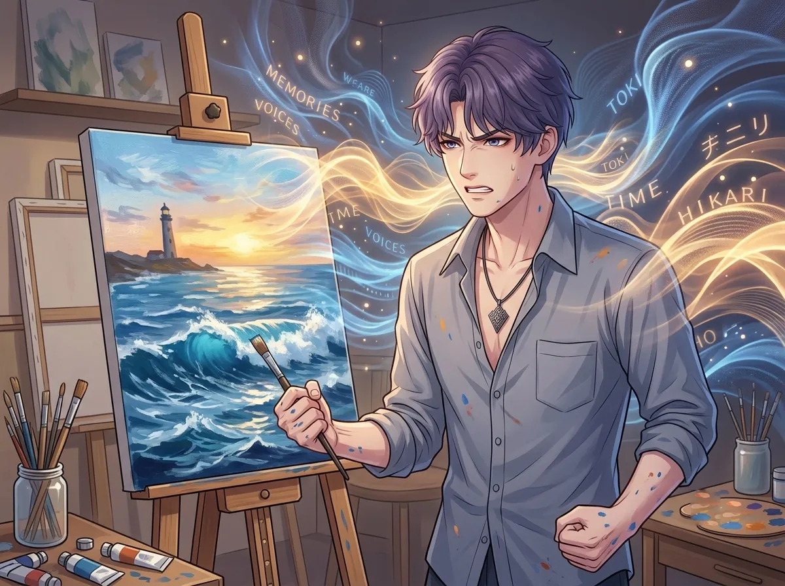
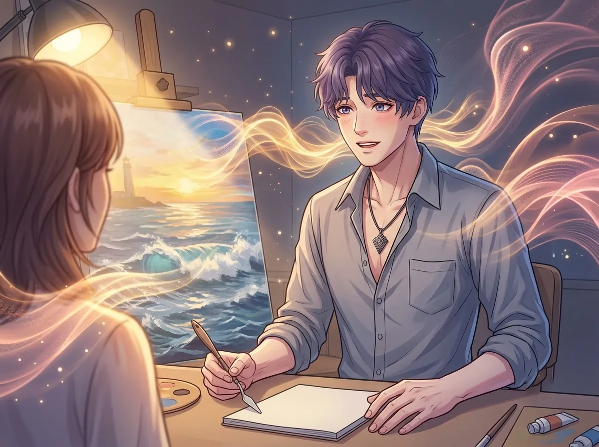
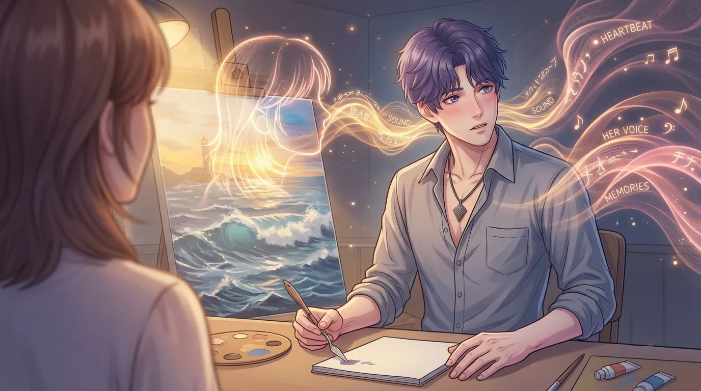
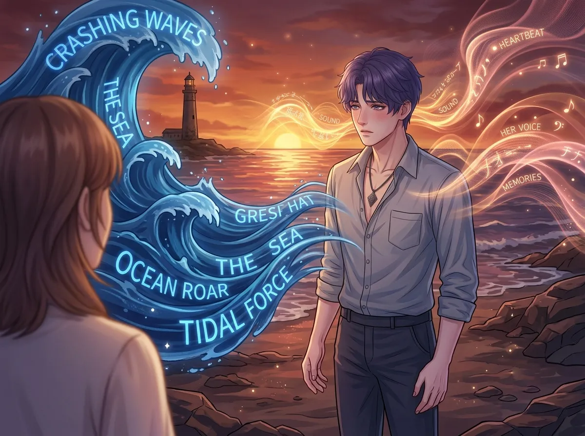

He remembers every wave. He tries to paint them. He never succeeds.
He remembers the sound of the sea. Every wave. Every variation. Every mood.
He remembers the way it sounded in the morning. The way it sounded at dusk. The way it sounded during storms. The way it sounded on days when the sun was so bright it hurt his eyes.
He remembers the sound of the sea because it was the only constant in a world that was falling apart. It was the last thing he heard before everything changed. It was the first thing he missed when everything was gone.
He has been trying to recreate the sound ever since. Not in music. In paint. He paints the sea. Every day. Trying to capture the sound in color.
This is the story of that sound. And the day he heard a different one.
He closes his eyes. He hears it. The sea.
It is always there. In the background of his mind. In the quiet moments. In the spaces between his thoughts. The sound of waves. The sound of water. The sound of a world that no longer exists.
He remembers the rhythm of it. The way the waves came in. The way they retreated. The way they held a beat that was always the same and always different.
He remembers the sounds that were part of it. The creak of boats. The call of birds. The laughter of people who lived near the shore.
He remembers everything. Every detail. Every sound. Every moment.
He remembers the sound of the sea because it is the only thing he has left from his kingdom. The only thing he can still hear. The only thing he can still hold onto.
He remembers because remembering is all he can do. The kingdom is gone. The people are gone. The colors are gone. But the sound remains. The sound is still there. In his mind. In his memory. In the place where he keeps the things he can't afford to lose.
He remembers every wave because each wave was different. Each one carried a different sound. A different feeling. A different memory.
He will never forget the sound of the sea. It is the only thing he has left.

He paints the sea. Every day. He paints the waves. He paints the colors. He paints the light.
He never captures the sound.
He tries. He tries to put the sound in the painting. He tries to make the painting sound the way the sea sounded. He tries to transfer the memory from his mind to the canvas.
He can't. He never can. The sound is in his head. It is in his memory. It is in the part of him that still belongs to the sea. It cannot be transferred to paint. It cannot be put on canvas. It cannot be shared.
He knows this. He knows it is impossible. He knows he will never succeed. He paints anyway. Every day. Trying to capture a sound that cannot be captured.
He knows he will never capture the sound. He knows it is impossible. He knows that paint cannot carry sound. He knows that color cannot carry memory.
He paints anyway. Because painting is the only way he knows how to try. Because painting is the only way he knows how to keep the sound alive. Because painting is the only way he knows how to keep the sea with him.
He will never succeed. He knows this. He paints anyway.

And then he heard a different sound.
Not the sea. Not the waves. Not the kingdom. Something new. Something he had never heard before.
It was her voice. Her laugh. The sound of her breathing. The sound of her being alive.
It didn't sound like the sea. It sounded like a different kind of water. A different kind of wave. A different kind of rhythm.
He didn't know what to do with it. He had spent a thousand years listening to the sea. He had memorized every wave. He had memorized every variation. He knew the sea better than he knew anything.
He didn't know her. He didn't know the sound of her. He didn't know what to do with a sound he hadn't heard before.
He had been listening to the sea for a thousand years. He thought he knew what water sounded like. He thought he knew what waves sounded like. He thought he knew everything about the sound of something that was alive.
He was wrong. He didn't know what it sounded like to hear someone new. He didn't know what it sounded like to hear a voice he hadn't memorized. He didn't know what it sounded like to hear a rhythm he hadn't learned.
She taught him. She taught him what it sounded like to hear something new. She taught him what it sounded like to feel something he hadn't felt before.
He didn't know what to do with it. He still doesn't.

He thought he would never forget the sound of the sea. He thought the sea was the only sound he would ever need. He thought the sea was the only sound he would ever want to remember.
He was wrong.
He hears her now. In the quiet moments. In the spaces between his thoughts. In the places where the sea used to be.
He hears her laugh. He hears her voice. He hears the sound of her being alive.
The sea is still there. It is still in his memory. It is still in the part of him that belongs to the kingdom.
But she is there too. A new sound. A different sound. A sound he didn't ask for. A sound he can't stop hearing.
He didn't mean to let her in. He didn't mean to let her sound replace the sea. He didn't mean to let anything be louder than the memory of his kingdom.
But she is louder. Not in volume. In presence. In persistence. In the way she stays in his mind long after she leaves the room.
He hears her now. He hears her more than he hears the sea. He hears her more than he hears anything.
He doesn't know what to do with that. He doesn't know how to let go of the sea. He doesn't know how to hold onto her. He is caught between two sounds. Two memories. Two worlds.

He stands at the shore. He hears the sea. He hears the waves. He hears the rhythm he has known for a thousand years.
He also hears her. He hears her voice. He hears her laugh. He hears the sound of her being alive.
He doesn't know which sound he wants more. He doesn't know which sound he would choose. He doesn't know which sound he will keep when everything else is gone.
He has been holding onto the sea for a thousand years. He doesn't know how to let go. He doesn't know if he can.
He also doesn't know how to hold onto her. He doesn't know how to keep her sound close. He doesn't know how to make sure he never forgets the way she sounds.
He is standing at the shore. Two sounds. Two memories. Two worlds. He doesn't know which one to choose.
He doesn't know which sound he wants more. The sea has been with him for a thousand years. It is the only thing he has left from his kingdom. It is the only thing that still connects him to who he used to be.
She has been with him for a fraction of that time. But she is louder. She is closer. She is more present than the sea has ever been.
He doesn't know how to let go of the sea. He doesn't know how to hold onto her. He doesn't know how to make a choice between what was and what is.
He doesn't have to choose. Not yet. Not now. He can still hear both. He can still remember both. He can still keep both.
But he knows the day will come. When the sea is quieter. When her sound is louder. When he has to decide which one he wants to keep.
Rafayel remembers the sound of the sea. Every wave. Every variation. Every memory.
He has been trying to paint the sound for a thousand years. He has never succeeded. He will never succeed. The sound cannot be captured. The sound cannot be recreated. The sound can only be remembered.
He thought the sea was the only sound he would ever need. He thought the sea was the only sound he would ever want to remember.
Then he heard her. A new sound. A different sound. A sound that didn't belong to the sea.
He doesn't know what to do with it. He doesn't know how to hold onto it. He doesn't know how to keep it without losing the sea.
He stands at the shore. He hears both. He will hear both. For as long as he can.